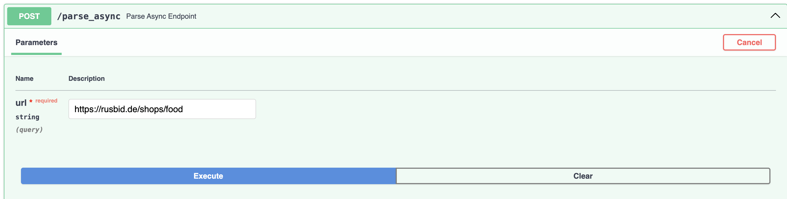
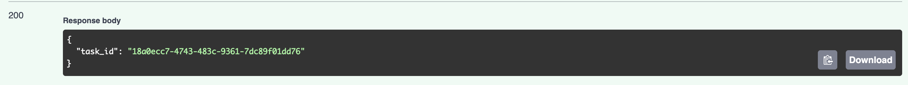
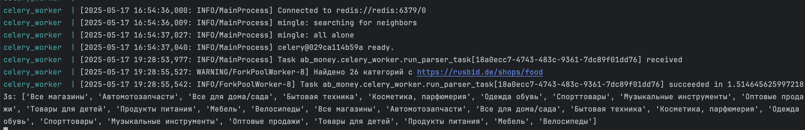

Отчет по лабораторной работе 3
Подзадача 3: Вызов парсера из FastAPI через очередь
Ссылка на GitHub
https://github.com/TonikX/ITMO_ICT_WebDevelopment_tools_2024-2025/pull/114
Листинг кода
app/celery_worker.py
from celery import Celery
import os
celery_app = Celery(
"ab_money",
broker=os.getenv("CELERY_BROKER_URL", "redis://redis:6379/0"),
backend=os.getenv("CELERY_RESULT_BACKEND", "redis://redis:6379/0"),
include=["ab_money.celery_worker"]
)
@celery_app.task(name="ab_money.celery_worker.run_parser_task")
def run_parser_task(url: str):
from task2.parse_asyncio import parse_sync
titles = parse_sync(url)
return titles
docker-compose.yml
redis:
image: redis:7
container_name: redis
ports:
- "6379:6379"
celery:
build:
context: ./ab_money
container_name: celery_worker
command: celery -A celery_worker.celery_app worker --loglevel=info
depends_on:
- redis
- web
environment:
DATABASE_URL: postgresql://postgres:1234@db:5432/postgres
PYTHONPATH: /app:/app/ab_money:/app/task2
volumes:
- ./ab_money:/app/ab_money
- ./task2:/app/task2
Эндпоинт


Вывод в терминале
docker-compose logs parser
